进阶配置
配置https
申请证书
在腾讯云内申请一个免费的SSL证书。
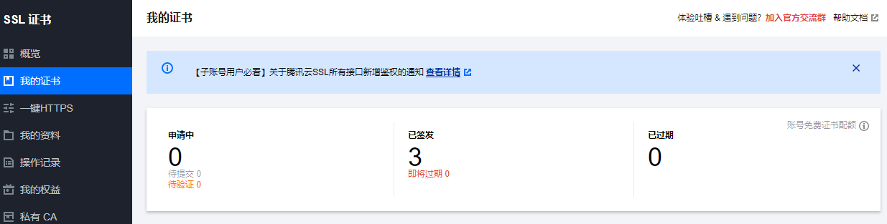
下载证书（Nginx）：
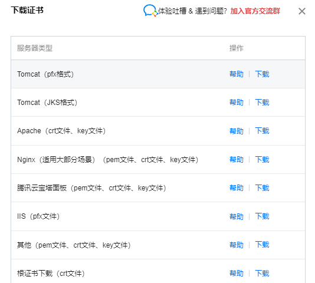
解压后得到：
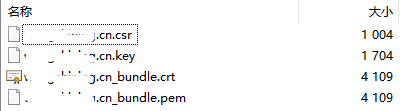
使用scp命令将证书文件拷贝到服务器上：
1 | cd 证书文件夹 |
修改配置文件
在服务器端修改配置文件
1 | cd /usr/local/soft/nginx |
修改内容如下：
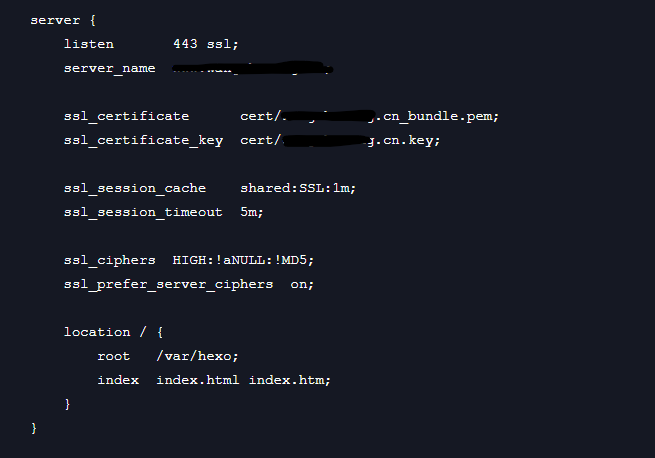
在文件最后修改server_name为你的公网ip或域名、ssl_certificate为*.pem文件存放的位置、ssl_certificate_key为*.key文件存放的位置。
修改location为hexo目录所在位置。
修改原有端口80的监听，加一行配置
1 | return 301 https://www.xxxxxx.cn$request_uri; |
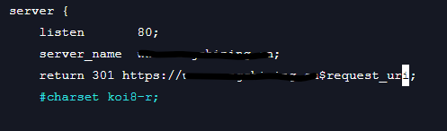
重启nginx:
1 | cd /usr/local/soft/nginx/sbin |
Hexo主题配置
我是用的是next主题，配置后效果如下，如果不喜欢的话可以搜索其他博客的主题配置。
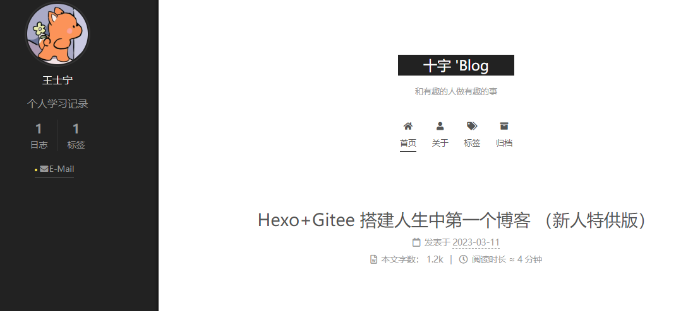
配置next主题
1.前往Next主题制作团队的主页下载Zip压缩包
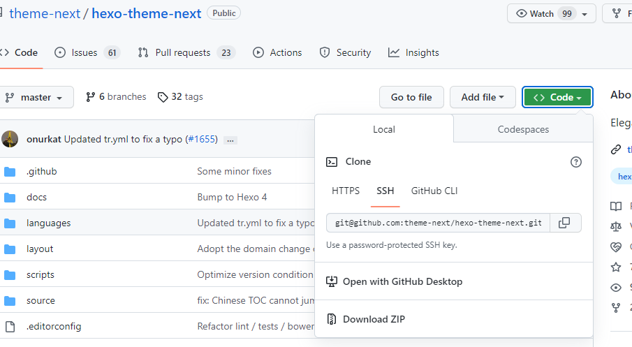
- 下载后，解压到博客目录下的themes文件夹内
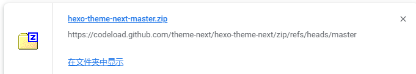
重命名为next:
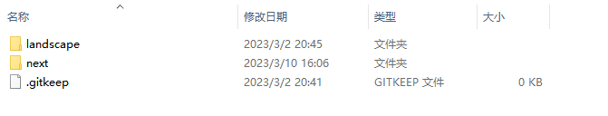
修改站点配置文件_config.yml
基础配置
1
2
3
4
5
6
7
8# Site
title: #博客标题
subtitle: #副标题
description: #网站描述
keywords: #网站关键词
author: 王士宁 #名字
language: zh-CN #网站参考语言
timezone: 'Asia/Shanghai' # 时区修改主题：
1
2
3
4# Extensions
## Plugins: https://hexo.io/plugins/
## Themes: https://hexo.io/themes/
theme: next修改主题配置文件themes\next\_config.yml
(1) 主题风格
1
2
3
4
5
scheme: Muse(2) 设置导航栏菜单
可自行增减功能，取消注释即可启用。
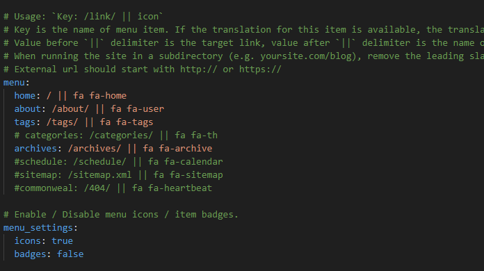
（3）侧边栏设置
侧边栏我设置的位置是左侧，同时设置永远显示，这里也可以根据注释修改
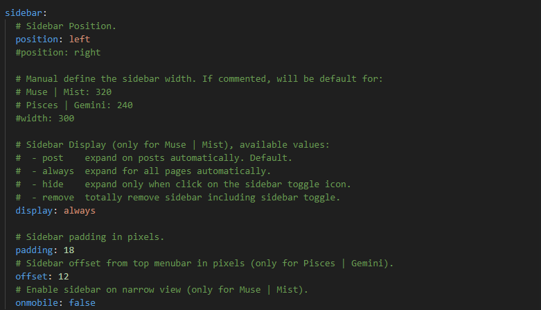
（4） 侧边栏头像
url链接为图片的相对路径，在next/source目录下。
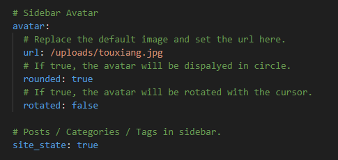
（5）社交链接
这里是侧边栏链接，可以指向某个链接或某个网址。
这里我只加了一个email，因为其他账号都没有发啥东西，等开始更新再添加。
1 | social: |
（6）打赏功能
效果如下
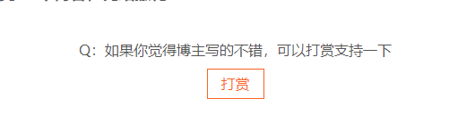
1 | # Reward (Donate) |
（7）关注其他发布渠道
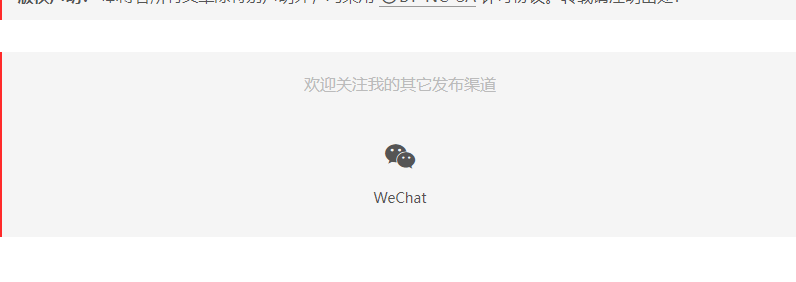
1 |
|
(8) 返回顶部按钮并显示阅读进度
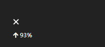
1 | back2top: |
没用但是好玩的配置
2D人物
添加一个在左下角看着你的小人，没啥用但是很好玩。其实还有鼠标点击有爱心和好玩的丝线等奇奇怪怪的功能还没来得及配置，虽然没啥用，但是很有意思。
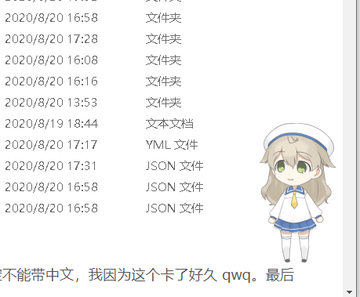
- 下载插件
1 | npm install --save hexo-helper-live2d |
- 添加配置文件
修改站点目录下的_config.yml：
1 | live2d: |
- 安装你喜欢的模型
模型名称如下：
2
3
4
5
6
7
8
9
10
11
12
13
14
15
16
17
18
19
20
21
22
>live2d-widget-model-epsilon2_1
>live2d-widget-model-gf
>live2d-widget-model-haru/01 (use npm install --save live2d-widget-model-haru)
>live2d-widget-model-haru/02 (use npm install --save live2d-widget-model-haru)
>live2d-widget-model-haruto
>live2d-widget-model-hibiki
>live2d-widget-model-hijiki
>live2d-widget-model-izumi
>live2d-widget-model-koharu
>live2d-widget-model-miku
>live2d-widget-model-ni-j
>live2d-widget-model-nico
>live2d-widget-model-nietzsche
>live2d-widget-model-nipsilon
>live2d-widget-model-nito
>live2d-widget-model-shizuku
>live2d-widget-model-tororo
>live2d-widget-model-tsumiki
>live2d-widget-model-unitychan
>live2d-widget-model-wanko
>live2d-widget-model-z16
可直接通过命令下载，比如要下载wanko模型就用：
1 | npm install --save live2d-widget-model-wanko |
因为是在站点目录下修改的配置文件，所以需要修改路径：
在博客目录下创建一个文件夹live2d_models，在node_modules中找到下载好的2d人物模型，复制到live2d_models文件夹下。
修改配置文件：
1 | model: |
use后修改为模型名称即可完成修改。